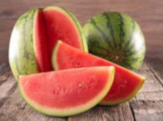
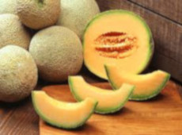
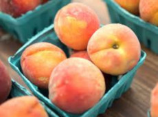
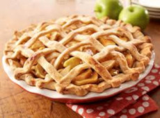
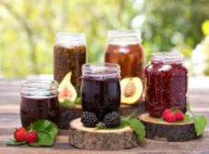

Homegrown or Homemade
-

Watermelon
Delicious and refreshing. High in vitamin C, vitamin A and many healthy plant compounds. Helps You Hydrate.
-

Cantaloupe
The water, antioxidants, vitamins, and minerals in cantaloupe can provide a variety of health benefits.
-

Peaches
A cup of diced peaches provides 11.1 mg of vitamin C, as well as adding to the recommended daily allowance of potassium and iron.
-

Apple Pie
This is absolutely the best homemade apple pie you'll have! It has a flaky, buttery crust and a tender, lightly-spiced apple pie filling.
-

Whoopie Pies
The ultimate Whoopie Pies – perfectly chocolatey, super soft and fluffy and filled with a luscious marshmallow fluff whoopie pie filling.
-

Homemade Jelly
This homemade jelly recipe is made from natural ingredients, and natural sweeteners, without any additives. It’s a delicious treat for kids and grown-ups alike!